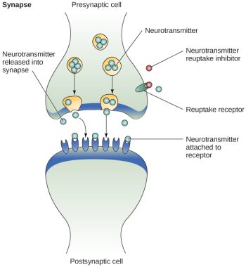
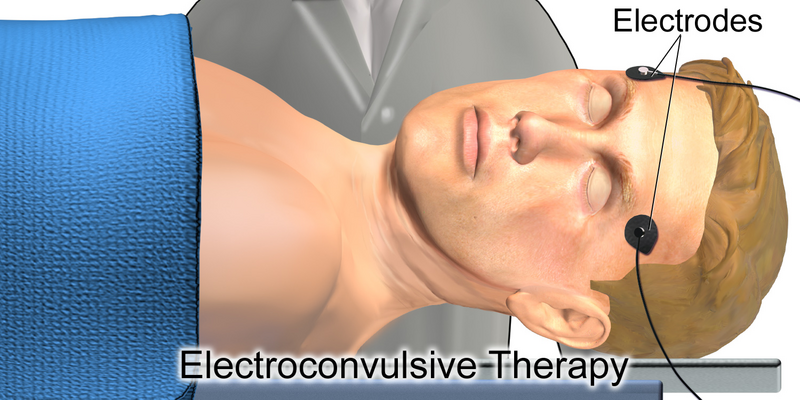

12.3: Mood Disorders: Depression and Bipolar Disorder
Mood disorders are characterized by severe disturbances in mood and emotions—most often depression, but also mania and elation (Rothschild, 1999). All of us experience fluctuations in our moods and emotions, and often these fluctuations are caused by events in our lives. We become elated if our favorite sports team wins the big game and dejected if a romantic relationship ends or if we lose our job. At times, we feel fantastic or miserable for no clear reason. People with mood disorders also experience mood fluctuations, but their fluctuations are extreme, may last longer, distort their outlook on life, and impair their ability to function.
The DSM-5 includes two general categories of mood disorders: depressive disorders and bipolar disorders. Depressive disorders are a group of disorders in which depression is the main feature. Depression is a vague term that, in everyday language, refers to an intense and persistent sadness. People with depressive disorders often feel sad, discouraged, and hopeless. They may lose interest in activities once enjoyed, experience a decrease in drives such as hunger and sex, and/or doubt personal worth. Depressive disorders vary by degree, but this chapter highlights the most well-known: major depressive disorder (sometimes called unipolar depression).
The criteria for diagnosing major depressive disorder (MDD) are detailed in the DSM-5 (APA, 2022). Briefly, to meet criteria for major depressive disorder, an individual must experience symptoms regarded as severe, including either depressed mood or loss of interest in activities most of the day, almost every day for at least two weeks. The symptoms must impair functioning or cause significant distress.
Major depressive disorder is experienced each year by about 7% of the population in the United States (APA, 2022; Bridley & Daffin, 2024). Young adults (18 to 29 year-olds) report higher rates of MDD than any other age group. Rates of MDD in women are about twice as high as in men. The estimated lifetime prevalence of major depressive disorder in women is 21.3% compared to 12.7% in men (Nolen-Hoeksema, 2001; Bridley & Daffin, 2024).
Bipolar disorder and related disorders are a group of disorders in which mania is the defining feature. Mania is a state of extreme elation and agitation. When people experience mania, they may become extremely talkative, behave recklessly, or take on many tasks simultaneously.[1]
Bipolar disorders are diagnosed based on the presence of manic or hypomanic episodes (APA, 2022; Bridley & Daffin, 2024). Bipolar I requires at least one manic episode, characterized by abnormal, persistent mood elevation or irritability lasting nearly all day, every day, for at least a week. Bipolar II is diagnosed when only less severe hypomanic episodes occur for at least 4 days. A manic episode might be preceded and/or followed by a major depressive episode. Bipolar I disorder afflicts 1.5% and bipolar II disorder afflicts 0.8% of the U.S. population.
Neural Mechanisms Underlying Depression
Brain Activity. Depression involves an overall reduction in brain activity, and some parts of the brain are more affected than others. In brain-imaging studies using PET scans, people with depression display abnormally low activity in the prefrontal cortex, a brain region involved in cognitive control, decision-making, planning, and emotion regulation.
Abnormal activity in the prefrontal cortex, especially in its lateral, orbitofrontal, and ventromedial regions, often correlates with the severity of the depression. The lateral prefrontal cortex is involved in cognitive control—directing attention, inhibition, and working memory to perform a task. The orbitofrontal cortex is involved in decision-making and reward valuation, crucial for delaying gratifications to obtain long-term benefits. The ventromedial prefrontal cortex is involved in several social and emotional processes such as regulating negative emotions and processing of self-relevant information. Disruption of these brain regions contributes to hallmark characteristics of mood disorders, including impaired concentration, poor decision-making, increased self-focus and negative affect.
Some research shows that left prefrontal activity is associated with positive feelings. The left prefrontal cortex is thought to inhibit negative emotions generated by limbic structures like the amygdala, which are overly active in people with depression. Patients who respond to antidepressants show reduced amygdala overactivity; whereas continuing amygdala overactivity despite treatment often predicts depression relapse.
Genetics. Genetics contributes to depressive disorders. Heritability for depressive disorders is about 40% and the risk of developing depression when a family member has had depression is 1.5-3 times higher than the general population (Fan et al., 2020; Kendler et al., 2009). Nevertheless, depressive disorders are still thought to arise from complex gene-environment interactions.[2]
Brain Chemistry. Mood disorders are associated with abnormal levels of certain neurotransmitters, particularly serotonin and norepinephrine (Thase, 2009). These neurotransmitters regulate bodily functions often disrupted in mood disorders, including appetite, sex drive, sleep, arousal, and mood. Low activity levels of serotonin and norepinephrine have long been documented as contributing factors to developing depressive disorders. This relationship was discovered accidentally in the 1950s when monoamine oxidase inhibitors (MAOIs) (which increase available serotonin and norepinephrine) were given to tuberculosis patients, and miraculously, their depressive moods also improved (Bridley & Daffin, 2024). While these neurotransmitters are involved in depression and can be targeted to reduce symptoms, the exact mechanisms are still under investigation.
Treatments for Depressive Disorders
Pharmacology. Major Depressive Disorder is among the most frequent and debilitating psychiatric disorders, so research on treatments is extensive. Antidepressants, such as selective serotonin reuptake inhibitors (SSRIs), are often the most common first-line attempt at treatment for MDD. As their name indicates, SSRIs block the reuptake of serotonin into the presynaptic cell. This action maintains higher levels of serotonin in the synapse, potentially reducing depressive symptoms (Figure 3). However, while serotonin levels can rise within an hour after taking an SSRI, it typically takes several weeks for SSRIs to actually improve symptoms.[3] Although their exact mechanism of action is unclear, SSRIs are commonly prescribed due to their effectiveness and relatively mild side effects. However, other drug classes, including tricyclics and MAOIs, can also be effective in treating depression.

Tricyclic antidepressants are like SSRIs in that they work by altering the number of neurotransmitters available for neurons. More specifically, they block the absorption or reuptake of serotonin and norepinephrine, thus increasing their availability for postsynaptic neurons.
Monoamine oxidase inhibitors (MAOIs) also work by increasing the available neurotransmitters. In basic terms, monoamine oxidase is released in the brain to remove excess norepinephrine, serotonin, and dopamine. MAO inhibitors essentially block the monoamine oxidase from removing these neurotransmitters, thus resulting in an increase in these brain chemicals, which are all involved with depressive symptoms (Shulman, Herman & Walker, 2013).
Psychotherapy—Cognitive Behavior Therapy (CBT). While we focus more on biomedical-related approaches in this biopsychology book, psychotherapy approaches, such as CBT are common and effective treatments for MDD. Cognitive Behavioral Therapy (CBT) focuses on the interconnected cognitive triangle of cognitions (thoughts), behaviors, and emotions. CBT aims to improve mood by modifying maladaptive thoughts and behaviors through various cognitive and behavioral interventions. CBT generally follows four phases of treatment:
- Phase 1: Increasing pleasurable activities.
- Phase 2: Challenging automatic, negative thoughts that can maintain depressive symptoms.
- Phase 3: Identifying negative thoughts as they arise. This helps the patient see how their thoughts contribute to their disorder.
- Phase 4: Changing thoughts. The final stage involves challenging the negative thoughts and replacing them with positive thoughts.
Brain Stimulation. For some people with depression, medications and psychotherapy don’t work. In cases of “treatment-resistant depression” (defined as at least two unsuccessful trials with antidepressant pharmacotherapy), several other treatment options can be effective. Electroconvulsive therapy (ECT) involves electrically stimulating the brain of an anesthetized patient in a hospital setting. Electrodes placed on the head pass electrical currents through the brain to induce a seizure (Figure 4). ECT is very effective in treating depression—one meta-analysis showed major decreases in depression symptoms with remission rates around 50% (Dierckx et al., 2012) and ECT may be more effective than drug therapy (UK ECT Review Group, 2003). ECT’s mechanisms of action are not well understood, but ECT alters neurotransmitter levels (e.g., increased excitatory glutamate) and its effects could stem from disrupting and rewiring neural circuits (Ousdal et al., 2022). Electroconvulsive therapy does have some side effects, such as short-term memory impairments, but is generally safe and well-tolerated (Semkovska & McLoughlin, 2010). Finally, ECT is considered one of the safer treatment options for severely depressed pregnant women in terms of fetal impact (Pompili et al., 2014).

More invasive than ECT, Deep Brain Stimulation (DBS) uses electrodes implanted in the brain to disrupt limbic-cortical circuits and can effectively treat depression (Mayberg et al., 2005). Less invasively, repetitive transcranial magnetic stimulation (rTMS) uses repetitive pulses of magnetic stimulation over the scalp to depolarize underlying neurons in the prefrontal cortex. This modulates neural circuitry involved in emotion regulation and depressive symptoms, and has been shown to be a safe and effective way to treat depression in an outpatient setting (McClintock et al., 2017).
Psychedelic-assisted therapy. Another promising approach for treatment-resistant depression is psychedelic-assisted therapy, which combines psychotherapy with the use of psychedelic substances like LSD or psilocybin. This method aims to induce altered states of consciousness to facilitate therapeutic breakthroughs. In treating depression, these substances may help patients gain new perspectives on their lives, break negative thought patterns, increase emotional responsiveness, and induce neuroplasticity. Sessions are conducted in controlled settings with a trained professional, and typically involve preparation, the psychedelic experience itself, and integration therapy afterward. Studies show promising results for treatment-resistant depression, with many patients showing significant and lasting improvements after a single psychedelic session (This contrasts with typical antidepressant treatments, which often involve years of continuous use). (Carhart-Harris et al., 2021; Goodwin et al., 2022; Nutt & Carhart-Harris, 2020; Voineskos et al., 2020).
In sum. Major depressive disorder has a variety of effective treatment options. Research has shown that psychopharmacological interventions are more effective in rapidly reducing symptoms, while psychotherapy, or combined pharmacological and therapy approach, is more effective in establishing long-term relief of symptoms. For cases of treatment-resistant depression, other treatment options, including brain stimulation and psychedelic-assisted therapy can be effective.[4]
Neural Mechanisms Underlying Bipolar Disorders
Research on the cause, course, and treatment of bipolar disorders (BD) have made major advances, but the mechanisms underlying episode onset and relapse remain poorly understood. BD has biological causes and is highly heritable (McGuffin et al., 2003). High heritability may suggest that BD is fundamentally a biological phenomenon. However, the course of BD varies greatly both within a person over time and across people (Johnson, 2005). For those with genetic vulnerability, psychosocial factors can trigger episodes (Johnson et al., 2008; Malkoff-Schwartz et al., 1998). Recent findings suggest bipolar disorders and schizophrenia have similar brain and genetic profiles, potentially aligning bipolar more closely with psychotic disorders than depression (Birur et al., 2017; Lichtenstein et al., 2009).
Biological explanations of bipolar disorder have centered on brain function. Many fMRI studies of BD focus on emotional processing, reflecting the view that BD is primarily an emotional disorder (APA, 2000). Findings show that regions of the brain involved in emotional processing are activated differently in people with BD relative to healthy controls (Altshuler et al., 2008; Hassel et al., 2008; Lennox et al., 2004). However, emotional brain-response studies in BD patients yield inconsistent results. The variability stems from testing participants in different illness phases (manic, depressed, inter-episode), small sample sizes, and lab stimuli that may not elicit a sufficiently strong brain response.
In terms of psychosocial factors in bipolar, research has focused on the environmental contributors. Environmental stressors, particularly severe stressors (e.g., loss of a significant relationship), can adversely impact the course of BD. Following a severe life stressor, people with BD have increased risk of relapse (Ellicott et al., 1990) and suffer more depressive symptoms (Johnson et al., 1999). Interestingly, positive life events can also adversely impact the course of BD. After attaining a desired goal, people with BD can suffer more manic symptoms (Johnson et al., 2008). Such findings suggest that people with BD may have a hypersensitivity to rewards.
Due to the close relationship between depression and bipolar disorder, researchers initially believed that bipolar disorder involved low levels of norepinephrine and serotonin. However, it is now believed that low levels of serotonin and high levels of norepinephrine may explain mania episodes (Soreff & McInnes, 2014).
Treatment of Bipolar Disorder
Treatment for bipolar disorder is debated. One approach uses mood stabilizers like Lithium or Depakote. These mood stabilizers are less potent at treating depressive symptoms, so are sometimes combined with antidepressants if necessary. The alternative is using newer antidepressants early without mood stabilizers, but this lacks strong research support and risks triggering manic episodes in bipolar patients. Consequently, mood stabilizers, especially Lithium, remain the primary treatment for bipolar disorder (Bridley & Daffin, 2024). Lithium affects neuronal activity by decreasing excitatory (dopamine and glutamate) neurotransmission while increasing inhibitory (GABA) neurotransmission, along with other compensatory neurotransmitter changes to achieve homeostasis (Malhi et al., 2013).
Media Attributions
- Neurotransmitter activity © OpenStax is licensed under a CC BY-NC-SA (Attribution NonCommercial ShareAlike) license
- Electroconvulsive_Therapy © BruceBlaus is licensed under a CC BY-SA (Attribution ShareAlike) license

- This section contains material adapted from: Spielman, R. M., Jenkins, W. J., & Lovett, M. D. (2020). 15.7 Mood and Related Disorders. In Psychology 2e. OpenStax. Access for free at https://openstax.org/books/psychology-2e/pages/15-7-mood-and-related-disorders License: CC BY 4.0 DEED. ↵
- This section contains material adapted from: Duboc, B. (2002). The Brain from Top to Bottom. Mental Disorders: Depression and Manic Depression: Parts of the Brain That Slow Down or Speed Up in Depression. Access for free at https://thebrain.mcgill.ca/ License: CC (Copyleft). ↵
- This section contains material adapted from: Gershon, A. & Thompson, R. (2024). Mood disorders. In R. Biswas-Diener & E. Diener (Eds.), Noba textbook series: Psychology. Champaign, IL: DEF publishers. Retrieved from http://noba.to/aqy9rsxe License: CC BY-NC-SA 4.0 DEED ↵
- “This section contains material adapted from: Bridley, A., & Daffin, L. W., Jr., (2024). Fundamentals of Psychological Disorders. Washington State University. https://opentext.wsu.edu/abnormal-psych/ License: CC BY-NC-SA 4.0 ↵
A class of psychological disorders marked by severe disturbances to emotions and mood
A class of mood disorders; marked by a persistent feeling of sadness and loss of interest that causes significant impairments in daily life
A type of obsessive-compulsive disorder. Characterized by persistent, intense focus and anxiety over perceived body defects and flaws in appearance
Prominent feature of bipolar disorder and related disorders; a state of abnormally and persistently excessive enthusiasm and irritable mood
Covers the front part of the frontal lobe of the cerebral cortex. Supports executive functions such as goal-directed behavior, cognitive flexibility, habit formation. Implicated in many psychological disorders
Part of the prefrontal cortex that supports higher-order functions such as working memory, selective attention, and planning. It is implicated in mood disorders.
A region of the frontal lobes of the brain above the eye sockets.
Part of the prefrontal cortex that is involved in value computation, decision-making, and emotion regulation. Implicated in mood disorders
Almond-shaped neural structure that is primarily responsible for regulating emotional responses, especially fear.
Psychiatric procedure that involves passing electrical currents through the brain to trigger a brief seizure. Effective in treating depression.
implanting electrodes within areas of the brain. The electrodes produce electrical impulses that affect brain activity to treat certain medical conditions.
A neuroscience technique whereby a brief magnetic pulse is applied to the head that temporarily activates or inhibits ongoing neuronal activity.
Characterized by extreme mood swings from depressive lows to manic highs